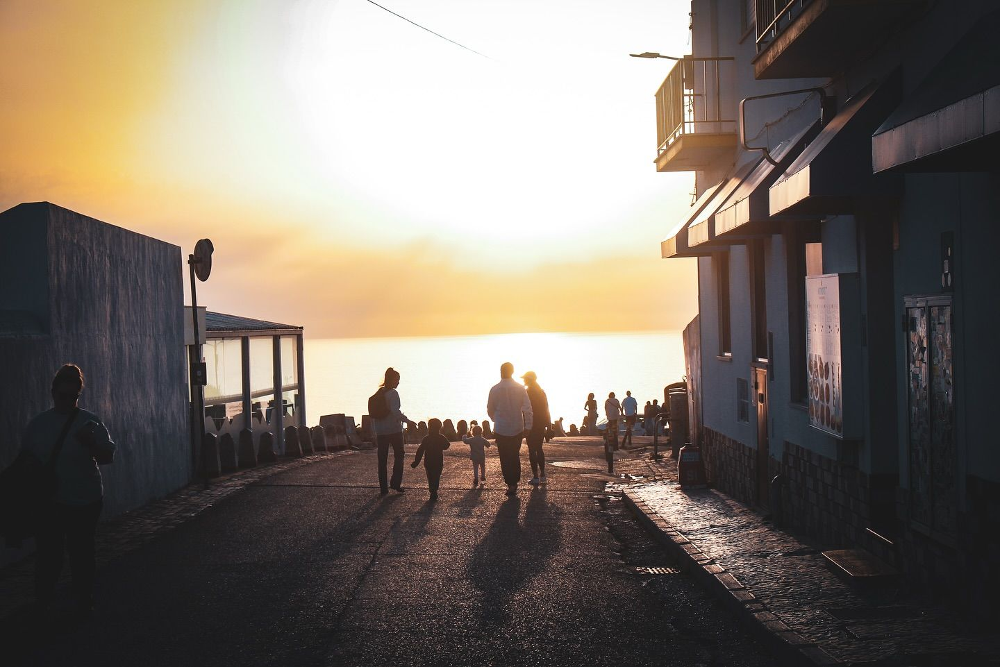
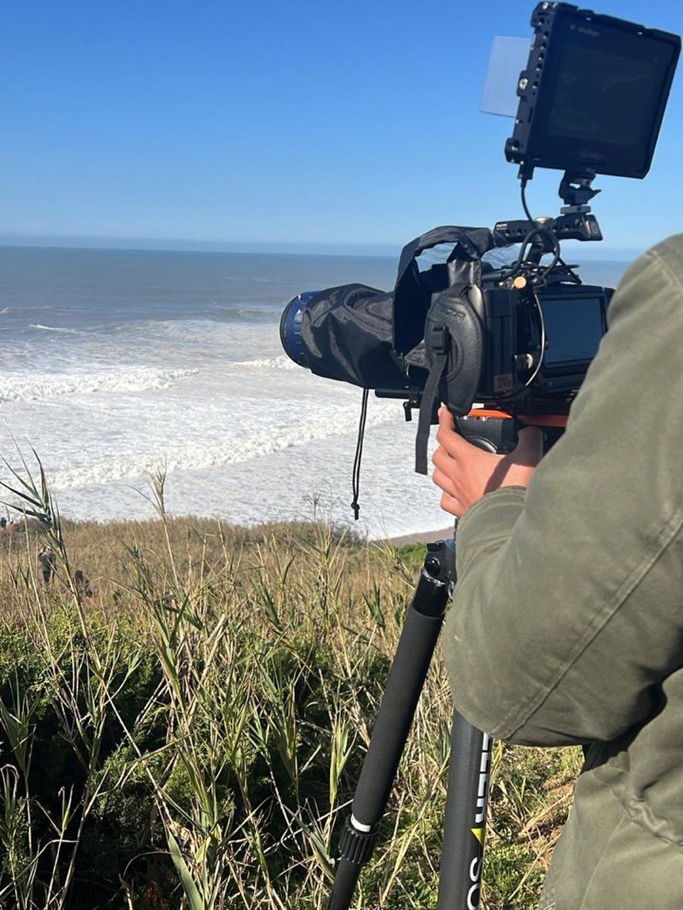

Forte de São Miguel Arcanjo
El punto clásico para ver las olas grandes. El faro está sobre el acantilado que separa Praia do Norte del pueblo; desde la explanada se ve romper la ola de frente.
Olas grandes · teleobjetivo largo
Matías Silva · Fotografía
Durante tres años en Portugal volví una y otra vez a Nazaré para conocer su mar, su gente y su cultura. Estas fotos son el resultado de ese trabajo: las olas de Praia do Norte, la vida del pueblo y la luz del Atlántico al caer la tarde. Cada imagen tiene su ficha con el lugar y cómo se hizo.
Praia do Norte es la playa de las olas más grandes del mundo. El cañón submarino de Nazaré concentra la energía del Atlántico frente al Forte, y en invierno el mar se vuelve espectáculo.
Entre la playa y el Sítio vive un pueblo de pescadores con calles que bajan al mar, barcos pintados a mano y muros donde los gatos miran pasar a la gente.
Serie
Viven en los patios y sobre los muros. Nadie los apura.
Nazaré mira al oeste. Cada tarde el sol baja sobre el Atlántico y el pueblo entero se acerca a los miradores para verlo.
Dónde pararse, cuándo ir y qué llevar. Lo que aprendí en tres años de ir y volver.
Nazaré tiene dos caras. Al norte del acantilado está Praia do Norte, la playa abierta donde rompen las olas gigantes. Al sur, protegida, la playa del pueblo con su avenida, los barcos y el Sítio arriba, unido por el ascensor.
Para las olas, todo pasa en invierno y depende del pronóstico. Para la calle y la luz, cualquier época sirve: el sol se pone sobre el mar todo el año.
Probabilidad por mes en Praia do Norte
El punto clásico para ver las olas grandes. El faro está sobre el acantilado que separa Praia do Norte del pueblo; desde la explanada se ve romper la ola de frente.
Olas grandes · teleobjetivo largoPara la textura del agua y el spray. Bajá por el sendero y quedate lejos de la orilla: en días grandes el mar sube sin aviso.
Detalle de olas · velocidad altaEl mirador sobre el pueblo. Es el lugar para el atardecer y para la hora azul, cuando se encienden las luces de la avenida.
Atardecer y noche · trípodeLa playa de los barcos tradicionales y las calles que bajan al mar. Buena para fotografía de calle por la mañana y al final de la tarde.
Calle y cultura · lente fijaLa temporada va de octubre a marzo. Noviembre, diciembre, enero y febrero son los meses con más probabilidad de olas gigantes. De mayo a agosto el mar suele estar tranquilo.
Frente a Praia do Norte hay un cañón submarino que concentra la energía del oleaje del Atlántico Norte. Cuando llega una tormenta grande, la ola crece al entrar al cañón.
En la explanada del Forte de São Miguel Arcanjo, sobre el acantilado. En días grandes hay mucha gente y es difícil estacionar, así que conviene llegar temprano.
Para los surfistas, un teleobjetivo largo, entre 400 y 600 mm, porque muchas olas rompen lejos. Para el paisaje y la escala del lugar alcanza con un zoom estándar.
Hay que mirar el pronóstico de oleaje: período de 13 segundos o más, mar de fondo del oeste o noroeste y viento suave del este o sudeste. La marea media subiendo suele dar las series más fuertes.
Temporada y pronóstico: Surfer Today.
Matías Silva, fotógrafo entre San Miguel y Nazaré.

Soy de San Miguel, Buenos Aires. Nazaré es mi segunda casa.
Viví tres años en Portugal. Parte de ese tiempo lo pasé instalado en Nazaré, y el resto viajaba hasta allá cada vez que podía para estudiar sus olas, su cultura, su gente y su energía. Fueron tres años de mirar el mismo lugar con paciencia, y de ahí salió la forma en que hoy lo fotografío.
Creé Viva Nazaré, un proyecto dedicado a la gente, la cultura y las olas gigantes del pueblo. Antes fui cofundador de Nazaré Inside, que publica reportes sobre las olas y la vida local.
Fotografío el mar, la calle y la naturaleza. Me preparo para volver a Nazaré en el invierno de 2027 y fotografiar la temporada de olas grandes desde el Forte. Esta web es el registro de ese camino.
Para colaboraciones, consultas o uso de fotografías, escribime por mail o por mensaje directo.